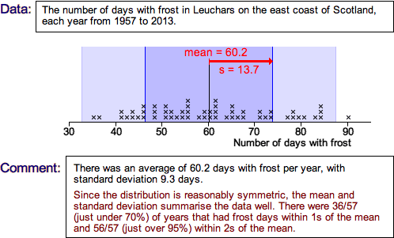
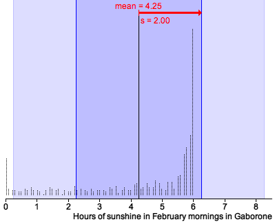

|
'Quarter-range' rule of thumb
Unfortunately the definition of the standard deviation is rather complex and this makes its value difficult to interpret. The best we can do is to give some guidelines. For many data sets, the standard deviation is just under a quarter of the range.
|
This is a simple rule, but is only very approximate. The standard deviation can be more than a quarter the range in distributions with short tails or much less if there are long tails or outliers.
The following rule of thumb works for more data sets.
The 70-95-100 rule of thumb
A more accurate rule-of-thumb that helps you to interpret the standard deviation is called the 70-95-100 rule. In many distributions,
The 70-95-100 rule holds approximately for most reasonably symmetric data sets.
For skew data, or data sets with long tails, outliers or clusters the 70-95-100 rule is often less accurate.
Examples
The pale blue bands on the diagram below show values that are within 1 and 2 standard deviations from the mean. (All values are within 3s of the mean.)

After checking the 70-95-100 rule of thumb for this data set, use the pop-up menu to check how well it works for a few other data sets with reasonably symmetric distributions.
The 70-95-100 rule of thumb helps to understand and explain what the value of the standard deviation tells you about the spread of distributions that are reasonably symmetric and bell-shaped. However if the distribution is highly skew, the mean and standard deviation only give a partial description of the shape of the distribution.
Hours of sunshine in Gaborone
As part of a study about the use of solar cookers, the number of hours of sunshine (a value between 0 and 6) was recorded in Gaborone each February morning between 1978 and 1997. The stacked dot plot below shows these 554 values and is highly skew. The mean and standard deviation on their own give no indication of the skewness in the data and are therefore a very incomplete description of the distribution.

The standard deviation does still summarises the spread of values. However considerably more than 70% of the values are within 1s of the mean and none are more than 1s above it. (However about 95% are still within 2s of the mean.)
The mean and standard deviation are only reasonably 'complete' summaries of the shape of a distribution when it is fairly symmetric.